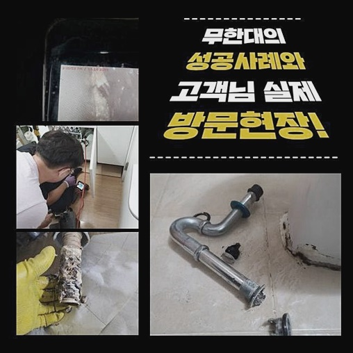
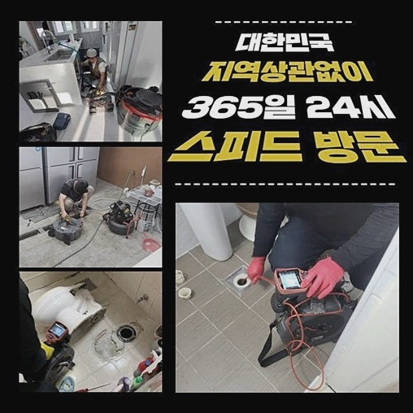
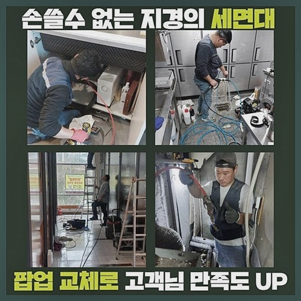
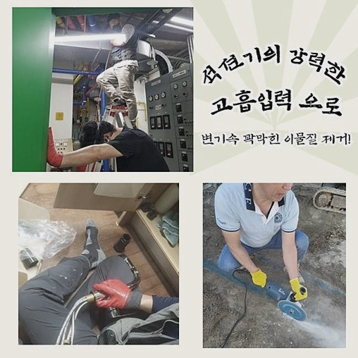
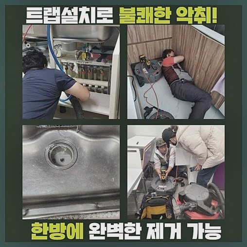
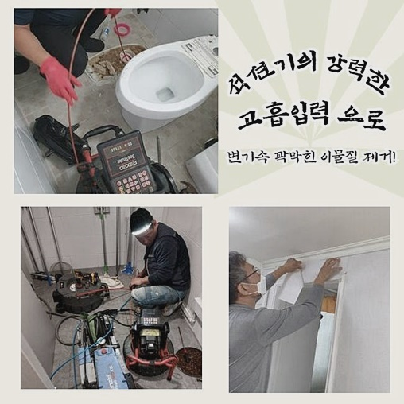
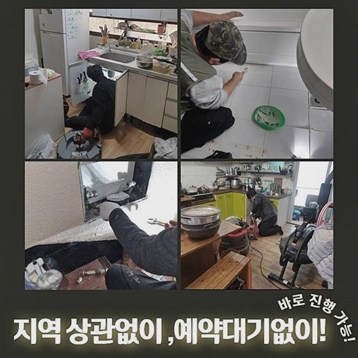

🏠 종로 창성동욕실뚫음 사간동 하수관고압세척 누수
용인 하수구막힘 전문 시공 후기

📋 작업 개요
- 위치: 용인
- 서비스 유형: 하수구막힘, 배관막힘, 누수수리, 뚫는업체, 배관청소, 고압세척
- 작업 일시: 2024. 6. 22. 9:53
- 업체명: 하수구수사대 (010-5615-2118)
🔍 문제 상황
종로 창성동욕실뚫음 사간동 하수관고압세척 누수
하수관련 설비에서 불현듯 다양한 문제들이 생겨나면 다양한 측면에서 이런저런 불편들이 생겨납니다
금일엔 고객님의 작업들을 살펴보면서 문제들을 알아보는 시간을 안내드릴테니 집중해주신다면 유용한 정보가 될거란 생각해요
하수도에 잔해생활하수가 자리하면 배수가 쉽지않아요
막히는 현상들이 야기되었을 시점에는 재빨리 해결해야 큰 피해를 받지않고 풀어갈수가 있습니다
증상이 발현되었을때 무분별하게 날카로운 것을 넣어서 수습하기보단 그 원인들은 온전히 찾고 청소를 밟아나가는것이 해요!
어떠한 방식으로 이유를 짚어내고 무슨 기기들을 통하여 하수도의 잔해물질을 제거시키는지 지금부터 살펴보겠습니다
화장실공간에서 야기된 석회성분들 때문에 배관이 막힌 곳으로 찾아뵈었는데 난처함을 내비치시던 고객분은 조속한 대처를 바라셨습니다
앞서서 전문가들이 내방하였으나 원인파악을 못해서 그 곳에서 줄행랑 치듯 철수했다고 알려주셨습니다
먼저 난처함을 내비치시던 현장에 도착한 다음 석회질들이 상당하다고 안내주었던 욕실공간에 진입하여 배수관로의 진단을 시작하니 깊은 부분에도 이런저런 이물질들이 누적된걸 알게 되었는데요

🔎 원인 분석
💡 전문가 진단: 정밀 진단 장비를 사용하여 슬러지의 고착 여부를 판명하고 타격/세척 작업을 실시했습니다.
겉으로도 보이는 상태라 안보이는 지점의 위치까지 많은 석회들이 흡착된걸로 판단했어요
석회성분 세척은 간단하게 해결될 수 있다고 여겨질수있지만 정확한 양상 파악과 전문기기를 써서 세척해야해요
욕실배수오류 작업들을 돌입하기에 앞서 천장부분을 들여다보고 자리를 옮겨 수리해야될 사항들이 없는지 면밀하게 관찰했어요
살펴보니 욕실쪽의 하수도는 밑으로 p트랩들이 존재하지 않았던 곳으로서 간단히 풀어나갈것으로 보여졌습니다
먼저 석회성분을 청소시키려고 분쇄그라인더를 가지고 바닥배수구의 입구쪽을 조금은 갈아줬어요
해당 작업을 거쳐야 밑부분의 부속들을 제거하고 청소를 시작해줄 수 있었는데요
글라인더 수리를 잘못할 시 타일쪽이 망가질 가능성이 있기에 시공에 있어서는 전문진이 수행해줘야 원활한 배관청소가 이루어질 수 있어요
부품들을 해부시켜주었더니 하단에서 뒤엉킨 머리카락덩어리와 소량의 이물질들이 침전된 상태를 체크했는데 해당 부위를 1순위로 해결하고자 했죠
석션기를 배수로 내부에 온전히 투입시키고 부유하는 여러 이물들이 제거되도록 작업들을 진행해봤는데요
하수관 주변의 주변을 막고서 공기들이 나가지않게끔 쎄게 눌러주어 작업들을 진행해주었어요
석션장치를 이용한 다음엔 안쪽으로 내시경기기를 넣어주고 파악해보았습니다

🔧 작업 과정
하단으로 투입된 내시경기기의 화면부를 보니 다양한 잔해생활하수가 쌓이는바람에 문제가 잠재워지지 못한걸 알게되었어요
석회질들이 딱딱해진 모습이여서 간소하게 해결될 수 없었기에 분쇄수리를 통해서 해결하기로 결정했어요
해당 계획들을 고통을 호소하셨던 의뢰인분에게 안내하고 서둘러 심층부에 있던 오염물을 사라지게 해주었죠
분쇄작업을 한다면 샤프트장치로 석회질을 청소해줘요
이 시점에서도 내시경기기도 삽입하여 심층부까지 석회질들이 있는 부위를 정확히 살펴야합니다
청소를 시작할땐 내시경기기가 없다면 곡선형태로 이루어져있고 심층부까지 뻗어나간 잔해들을 세척하는데에 무리가있어 투명한 세척을 이어갈 수가 없게되요
내시경장비가 투입되고서 고객님도 보시면 어떤절차를 실시해 청소가 행해지는지 보실 수 있으니 염려마세요!
고통을 호소하셨던 청소를 해줄 때에 신속한 진행을 도모하고자 약품을 이용해서야 할지 결론지을 필요가있었는데 약품을 함께 써서야 내시경기기와 샤프트장치로 스케일링이 원활히 진행될 듯 보였죠
심혈을 기울여 내시경카메라를 확인해주며 수리를 진행할때라면 하수관에서 빈틈없이 컨디션을 회복한것을 알았습니다
청소가 어느정도 일단락되었으면 부유물들을 석션으로 황급히 배출해내고 보면 석회화 된 이물질들이 사라진걸 알았죠
그 다음엔 어설프게 청소된 곳이 없는지 살펴보고 남은 여러 이물들이 없게끔 반복수리를 진행해 배관막힘 문제를 시정해내는 단계를 거쳐야합니다
청소작업 이후엔 유가부분을 다시금 제 자리로 만들어주기위해서 부착까지 했습니다
이때 작업들을 제대로 못하면 아랫집으로 수도가 새기도하므로 면밀하게 수리를 해드리고 있답니다
수리를 해드리고 나서도 내시경장비로 내부를 관찰했어요
이전에 배수구에 존재하던 잔해물이 제거되어 말끔해진 하수관의 모습들까지 관찰할 수 있었습니다
이처럼 세척을 해주어야지만 이전처럼 잔여물이 말썽피우지않고 재발없이 지속하여 유지시킬 수 있어요
끝으로 고통을 호소하셨던 하수구쪽으로 쏟아내면서 수월한 물흐름들이 행해지나 확인해보니 재빠르며 배수로로 배출되는것을 목격했습니다


✅ 작업 완료
이처럼 난처함을 내비치시던은 주기적으로 관리해줘야합니다
배수장애는 방치하지않아야 간소하게 시정가능하오니 재빨리 전문진을 통하여 해결하심이 하는 바람입니다
저희들은 한시간 전후로 내방이 가능하며 고객님에게 세척을 공개하여 부담들을 하지않게끔하니 아무때나 문의해보세요!
이밖에 안풀린 사안들이 있으실땐 전화주신다음 물으시면 심혈을 기울여 답변 드리겠습니다
금일의 내용이 의뢰자께도 도움되었다면 하는 바람입니다 감사드립니다




⚠️ 베란다 누수 및 방수 관리 방법
- ✅ 비가 많이 올 때 창틀 주변이나 아래층 천장에 얼룩이 생기는지 정기적으로 확인해 보세요.
- ✅ 우수관 주변 실리콘 마감이 들뜨거나 깨진 틈새가 있는지 손상 여부를 수시로 체크하세요.
- ✅ 베란다 바닥 타일의 줄눈(메지)이 소실되면 그 틈으로 물이 침투하여 누수가 유발됩니다.
- ✅ 누수 의심 증상 발견 시 방치하면 아래층 손실이 커지므로 즉시 전문가의 진단을 받으십시오.
💡 핵심 정리
- 확실한 장비 작업(내시경 점검 및 샤프트 스케일링)으로 원인을 뿌리 뽑습니다.
- 작업 후 1년 이내에 동일한 부위 재발 시 100% 무상 A/S 서비스를 보장합니다.
- 서울 · 경기 · 인천 전 지역에 24시간 언제든 긴급 출동할 수 있도록 항시 대기 중입니다.
❓ 자주 묻는 질문 (FAQ)
🚨 용인 하수구막힘 문제로 고민이신가요?
정확한 원인 진단과 확실한 시공으로 재발 없는 해결을 약속드립니다.
24시간 긴급 출동 | 서울 · 경기 · 인천 전지역 | 1년 내 재발 시 무상 A/S